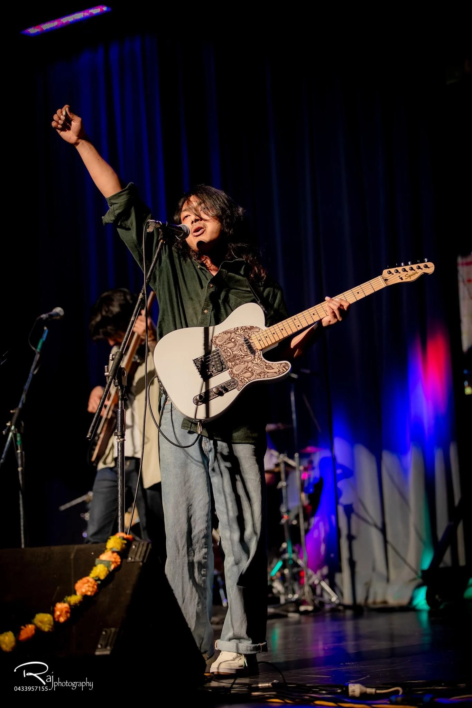

Vocalist • Songwriter • Vocal Tutor
"Music is the language of emotions that words cannot express"
Captivating Performances
Agaman Bishwokarma is a talented contemporary singer, songwriter, and experienced vocal tutor known for his captivating performances and dedication to vocal education. With a bachelor's degree in music performance, Agaman seamlessly blends technical expertise with artistic expression, creating music that resonates deeply with his audience.
As a singer-songwriter, Agaman crafts heartfelt compositions that reflect his unique perspective and emotional depth. His evocative lyrics and dynamic vocal delivery connect with listeners. His versatility shines across a range of contemporary styles, making him a standout artist in the modern music landscape.
With a commitment to artistry and education, Agaman Bishwokarma continues to leave a lasting impact on the music community as a performer and mentor.
Agaman believes that the human voice is the most expressive instrument, capable of conveying emotions that resonate universally. His approach to music centers on authenticity and emotional connection.
Mastery of breath control, pitch accuracy, and vocal health for sustainable performance and expression.
Developing stage presence, emotional delivery, and audience connection for impactful performances.
Nurturing each student's unique voice and artistic identity through personalized guidance and mentorship.
As a vocal tutor, Agaman is passionate about empowering his students to discover their voices. His personalized approach fosters confidence and growth, inspiring aspiring vocalists to reach their full potential.
"I believe that every voice has a unique story to tell. My mission is to help singers discover their authentic sound and use it to create meaningful connections through music."
— Agaman Bishwokarma